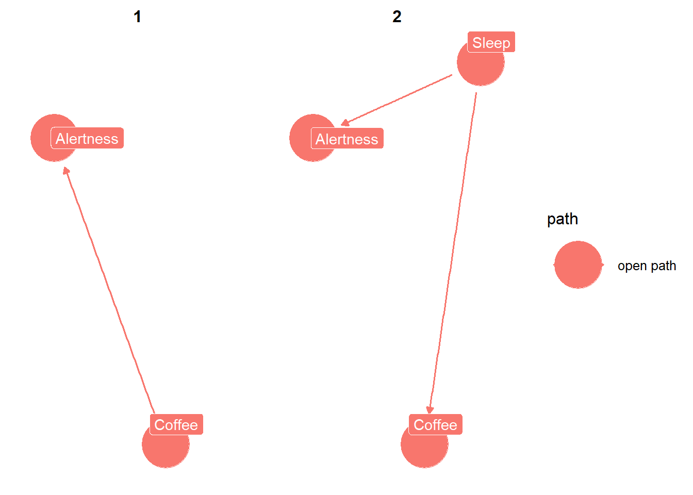

Yes..well no…well kinda. DAG in this case, stands for Directed Acyclic Graph. It’s a graph that is directed and acyclic…alright that’s not much of an explanation. Let’s try again: a causal DAG is used to show how your variables are causally related.
Of course to show these variables, we are inherently making assumptions. For example, assuming that X causes Y. We always make assumptions in science, since the real world is complicated. These assumptions are sometimes made implicitly, making it difficult to address for reviewers or people reading the paper.
Alternatively, if we show them explicitly then it makes the assumptions clear. To quote Miguel Hernán, since I couldn’t put it better myself, “Draw your assumptions before your conclusions”.
This post is an introduction
A minor note before we continue: this post is meant to be an introduction. DAGs can get quite complicated, especially is you add a lot fo variables, and have a variety of uses (i.e., selection of variables, identifying potential biases, guiding simulations, for missingness, etc). Future posts will delve more into these use cases but for now, it’s just meant to be a gentle intro.
Why should I?
A perfectly valid question at this point is “Why should I? I don’t need these. I know what assumptions I’m making”. While this may be true, a picture is worth a thousand words. It’s much, MUCH easier to identify biases visually than abstractly.
An equally, perhaps even more important point, is by using DAGs it is more clear for your reader to interpret/assess your assumptions. For example, confounding bias occurs when there’s a variable that affects both the exposure and the outcome. This is pretty straightforward to view.
A slightly more complicated version is collider bias. This occurs when ends of two different arrows meet at a variable. Collider bias is easy to identify visually but can be more difficult to identify abstractly, especially the more variables you add.
Rather than just speaking abstractly, time for an example!
Does Coffee Increase My Alertness?
I’m an avid coffee drinker. I love hot coffee, iced coffee, cold brew, nitro cold brew…you name it, I’m in (unless it’s bad coffee). Something I often wonder is if drinking a lot of coffee actually increases my alertness or not. That is, does coffee cause my alertness? Let’s start here. We’ll assume that coffee does cause alertness and draw a line between the two.
This looks great but there’s one glaring problem….there are many, many, MANY variables that affect both of these variables. How much you’ve slept, stress and hunger just to name a few. Not to mention that each of those variables are related. So our DAG needs some editing, but first we need to go over some assumptions or “house rules” per say.
Assumptions of DAGs
Let’s start with the acronym. They are called DAGs because they have a direction and cannot have a variable that causes itself, either directly or through another variable (Hernan and Robins 2021, 72).
Another key component is the causal Markov assumption, which put simply is that a variable is independent of any variable that it isn’t a cause for (for more details about this check out Hernan and Robins (2021), pp. 72). This assumption means that in a causal DAG, the common causes of any pair of variables in the graph must also be in the graph.
This means that not every variable needs to be in the graph, just those that are common causes of any pair of variables.
D-Separation
The d in d-separation stands for directionally separated. If all paths between two variables are blocked then we say that variables are d-separated (others they are d-connected). To decide if a path is blocked or open, we use the following rules (Hernan and Robins 2021, 78):
If no variables are being conditioned on, a path is blocked if and only if two arrowheads on the path collide at some variable on the path.
Any path that contains a non-collider that has been conditioned on is blocked.
A collider that has been conditioned on does not block a path.
A collider that has a descendant that has been conditioned on does not block a path.
Causal Graph Theory
There is some complex math, nonparametric structural equation models to be exact, behind these rules that I won’t go into here. If you are interested, I recommend checking out the work of Judea Pearl, or Chapter 6 of Hernan and Robins (2021).
We will summarize d-separation like so: a path is blocked if and only if, it contains a non-collider that has been conditioned on, or it contains a collider that has not been conditioned on and has no descendants that have been conditioned on (Hernan and Robins 2021, 78).
Water Flowing in a Pipe?
A useful way to think of this, to borrow a concept from Judea Pearl, is to think of water flowing in a pipe. For associations, this can flow both ways however when determining causality it cannot. Applying this thinking to the rules for d-separation think about it like water. If there is a collider, then water cannot flow there like a dam. If the collider is conditioned on, its like we moved the dam and water can now flow.
Variables to Include
Let’s return to our original DAG with just coffee and alertness. We need to include some more variables here, but which ones? Let’s assume that we have some other things we think can be important to include: deep breathing and sleep.
Sleep definitely affects coffee consumption and alertness. This we need to add to our graph because it’s a common cause of coffee consumption and alertness.
Now, we can see here that sleep is a confounder. This also shows, using our new found fancy DAGs method, that coffee and alertness are d-connected through sleep.
Code
ggdag::ggdag_paths(coffee_dag)

Code
ggdag::ggdag_adjustment_set(coffee_dag)
Now we can move onto deep breathing. Deep breathing only affects alertness, or so we assume, this is an example of effect modification (spoiler alert: we can include if we want but the DAG is perfectly valid if not since deep breathing isn’t a common cause of A and Y)
We see that deep breathing affects alertness but not drinking coffee. Now, if we didn’t include deep breathing it would still be a valid causal diagram because deep breathing isn’t a common cause of coffee and alertness. We’d only need to include if it was part of our causal question (e.g., what is the average causal effect of coffee on alterness within levels of deep breathing?).
Now, another point is that including it in our causal diagram doesn’t distinguish which of the following three ways that alertness could modify the effect of coffee on alertness:
The causal effect of coffee on alertness is in the same direction in both stratum deep breathing = yes and deep breathing = no
The direction fo the causal effect of coffee on alertness in stratum deep breathing = yes is opposite of that in stratum deep breathing = no (sometimes referred to as Simpson’s paradox).
Coffee has a causal effect on alertness in one stratum of deep breathing but no causal effect in the other stratum.
Now, our DAG fails to distinguish which of these is the type of effect modification. Additionally, many effect modifiers do not have a causal effect on the outcome. Instead, they are surrogates for variable that have a causal effect on the outcome.
In this DAG, we see deep breathing is actually a surrogate for a variable that has a causal effect. Deep breathing is a surrogate effect modifier whereas stress is a causal effect modifier. Both of these are often indistinguishable in practice, so the concept of effect modification encompasses both (Hernan and Robins 2021, 81).
Uses of DAGs
Great, so we now know how to draw a DAG but is this even useful? Absolutely! It can be used for identifying biases, variable selection, working through missingness, and other things!
What Next?
Now you’ve grasped the basics of DAGs! You can use these to help answer all your causally related questions! Personally, I mostly use them for variable selection. It’s extremely helpful in analyses for real-world data when deciding which variables require adjustment. Hope you had as much fun reading it as I did writing it!
References
Hernan, M. A., and J. M. Robins. 2021. “What If - Causal Inference.” Textbook.